進化学実習 2022 牧野研
7. 統計モデリング2: 一般化線形モデル
統計モデリングのお品書き

久保先生の"緑本"こと
「データ解析のための統計モデリング入門」
をベースに回帰分析の概要を紹介。
回帰のキモは線ではなく分布。
Data Science Hill Climb 2021 (東京海上) での講義 (~6時間) の演習無し抜粋バージョン (~2時間 x 2回)。
何でもかんでも直線あてはめではよろしくない

- 観察データは常に正の値なのに予測が負に突入してない？
- 縦軸は整数。しかものばらつきが横軸に応じて変化？
- データに合わせた統計モデルを使うとマシ
ここまで見てきた統計モデル
確率変数$X$はパラメータ$\theta$の確率分布$f$に“従う”: $X \sim f(\theta) $
e.g., ある植物が作る種の数$X$は平均値$\lambda$のポアソン分布に従う:
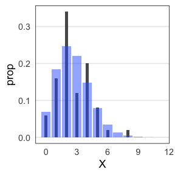
これを一般化線形モデル(GLM)として見ることもできる。
一般化線形モデル(GLM)として記述してみる
個体$i$の種子数$y_i$は平均値$\lambda_i$のポアソン分布に従う。
平均値$\lambda_i$は他のデータによらず$\beta_0$で一定。
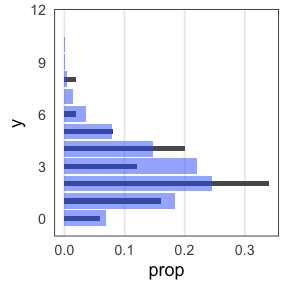
種子数をY軸にして、式を2つに分けただけ…?
説明変数を含むモデルを見ればご利益が分かるかも。
説明変数が1つある一般化線形モデル
個体$i$の種子数$y_i$は平均値$\lambda_i$のポアソン分布に従う。
平均値の対数$\log(\lambda_i)$はその個体の大きさ$x_i$に比例する。


この場合は単回帰。説明変数が複数あると重回帰。
複数の説明変数を同時に扱う重回帰
\[\begin{split} y_i &\sim \text{Poisson}(\lambda_i) \\ \log(\lambda_i) &= \beta_0 + \beta_1 x_{1i} + \beta_2 x_{2i} + \ldots \end{split}\]
気温も湿度も高いほどビールが売れる、とか
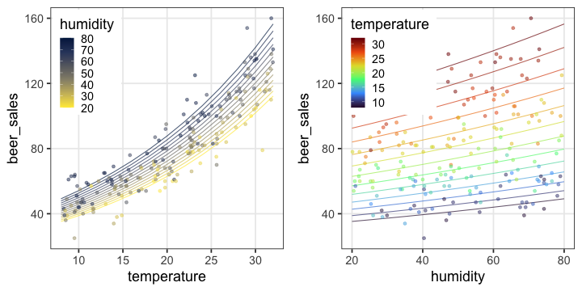
今度は確率分布とリンク関数を変えてみよう。
ロジスティック回帰
- 確率分布: 二項分布
- リンク関数: $\text{logit}(p) = \log \frac {p} {1 - p}$
何かの成否に対する何かの因子の影響、とか
客10人中$y_i$人がビールを注文。
その日$i$の気温$x_i$によって割合が変化。
\[\begin{split} y_i &\sim \text{Binomial}(n,~p_i) \\ \text{logit}(p_i) &= \beta_0 + \beta_1 x_i \\ p_i &= \frac 1 {1 + e^{-(\beta_0 + \beta_1 x_i)}} \end{split}\]
ロジスティック関数↑
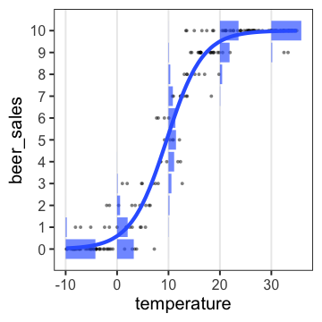
ロジスティック回帰 (狭義)
- 確率分布: ベルヌーイ分布 ($n = 1$ の二項分布)
- リンク関数: $\text{logit}(p) = \log \frac {p} {1 - p}$
何かの成否に対する何かの因子の影響、とか
風が吹けば桶屋が儲かる。
\[\begin{split} y_i &\sim \text{Bernoulli}(p_i) \\ &= \text{Binomial}(1,~p_i) \\ \text{logit}(p_i) &= \beta_0 + \beta_1 x_i \\ p_i &= \frac 1 {1 + e^{-(\beta_0 + \beta_1 x_i)}} \end{split}\]
ロジスティック関数↑
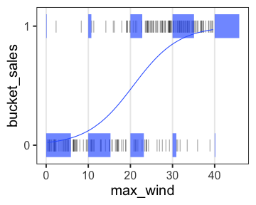
一般線形モデル (“化”無し) はGLMの一種
- 確率分布: 正規分布
- リンク関数: 恒等関数(なにもせずそのまま)
\[\begin{split} y_i &\sim \mathcal{N}(\mu_i,~\sigma^2) \\ \text{identity}(\mu_i) &= \beta_0 + \beta_1 x_i \end{split}\]

最小二乗法の直線あてはめと結果的に同じになる。
単回帰・重回帰と言ったとき一般線形モデルを前提とする人もいる。
分散分析 (Analysis of variance, ANOVA) as GLM
質的な説明変数を持つ正規分布・恒等リンクのGLM、と解釈可能。
指示変数 (0 or 1) に変換してから重回帰する。
| 天気 | → | $x_1$ ☀️ 晴れ | $x_2$ ☔️ 雨 |
|---|---|---|---|
| ☁️ くもり | 0 | 0 | |
| ☀️ 晴れ | 1 | 0 | |
| ☔️ 雨 | 0 | 1 |
\[\begin{split} y_i &= \mathcal{N}(\mu_i,\sigma^2) \\ \mu_i &= \beta_0 + \beta_1 x_{1i} + \beta_2 x_{2i} \end{split}\]

くもり☁️ $\beta_0$ を基準に、晴れの効果☀️ $\beta_1$ と雨の効果☔️ $\beta_2$ が求まる。
GLMなら確率分布・リンク関数を変えてもっと柔軟にモデリングできる。
共分散分析 (Analysis of covariance, ANCOVA) as GLM
質的変数と量的変数を両方含むGLM、と解釈可能。
正規分布・等分散・恒等リンクなどが仮定される。
| 天気 | → | $x_1$ ☀️ 晴れ | $x_2$ ☔️ 雨 |
|---|---|---|---|
| ☁️ くもり | 0 | 0 | |
| ☀️ 晴れ | 1 | 0 | |
| ☔️ 雨 | 0 | 1 |
\[\begin{split} y_i &= \mathcal{N}(\mu_i,\sigma^2) \\ \mu_i &= \beta_0 + \beta_1 x_{1i} + \beta_2 x_{2i} + \beta_3 x_{3i} \end{split}\]

GLMなら確率分布・リンク関数を変えてもっと柔軟にモデリングできる。
一般化線形モデル(GLM)ふりかえり
確率分布・リンク関数を変えて柔軟にモデリングできる。
特定の組み合わせには名前がある。
| 名前 | 確率分布 | リンク関数 | 説明変数 |
|---|---|---|---|
| ポアソン回帰 | ポアソン分布 | log | |
| ロジスティック回帰 | 二項分布 | logit | |
| 一般線形回帰 | 正規分布 | 恒等 | |
| 分散分析 | 正規分布 | 恒等 | 質的変数 |
| 共分散分析 | 正規分布 | 恒等 | 質的変数+量的変数 |
リンク関数をもう少しだけ掘り下げたい。
リンク関数
統計モデリングにおいて「まっすぐ以外も表現できる」意味
- $\text{identity}(\mu_i)$
- $\mu_i = \beta_0 + \beta_1 x_{1i} + \beta_2 x_{2i} + \ldots$
- 説明変数の効果が足し算的に働く。
- $\log(\lambda_i)$
- $\lambda_i = e^{\beta_0 + \beta_1 x_{1i} + \beta_2 x_{2i} + \ldots} = e^{\beta_0} \times e^{\beta_1 x_{1i}} \times e^{\beta_2 x_{2i}} \times \ldots$
- 説明変数の効果が掛け算的に働く。
e.g., $\Delta x_1$ 増えると $e^{\beta_1 \Delta x_{1}}$ 倍になる - $\text{logit}(p_i)$
- $p_i = \frac 1 {1 + e^{-(\beta_0 + \beta_1 x_i + \ldots)}} $ (ロジスティック関数)
- 説明変数の効果が頭打ちになる。
e.g., $\lim_{x \to -\infty} p = 0;~\lim_{x \to \infty} p = 1$
ほかに probit, inverse, sqrt, etc.
データはひとつ、モデルはたくさん
どう選ぶ？
- メカニズム的に納得できるものを選ぶ
- ポアソン過程のカウントならポアソン分布、間隔ならガンマ分布
- n回中k回のように割合的なカウントなら二項分布
- データを可視化してみて、それっぽい形・性質のものを選ぶ
- 左右対称のひと山ならとりあえず正規分布
- 負の値を取らないならガンマ分布
- 直線的か、指数関数的か、頭打ちか、などなど
客観的な指標もほしい。
モデルの尤もらしさといえば…
尤度 (likelihood)
あるモデル$M$の下でそのデータ$D$が観察される確率:
$\text{Prob}(D \mid M)$
データ$D$を固定し、モデル$M$の関数とみなしたものが尤度関数:
$L(M \mid D)$
モデルの構造も固定してパラメータ$\theta$だけ動かす場合はこう書く:
$L(\theta \mid D)$ or $L(\theta)$
対数尤度 $\log L$ の形にしたほうがいろいろ便利。
各モデルで最適なパラメータを探して、比較:
$\log L^* (M_1) \text{ vs. } \log L^* (M_2) \text{ vs. } \log L^* (M_3) \ldots$
たしかに尤度はあてはまりの良さを表してそう
この場合は直線回帰よりもポアソン回帰が良さそう:

この調子で、より尤度の高いモデルを探していけばいいだろうか？
あてはまりが良ければいいってもんでもない
- 過剰適合 / 過学習 / overfitting
- パラメータを増やせば現データへの適合度・尤度を高くできるが、
予測・理解の役には立たなくなる。
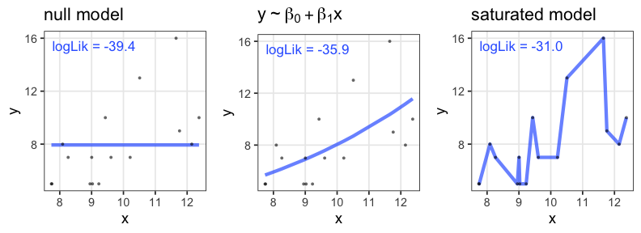
帰無モデル: 説明変数なし。切片のみ。
飽和モデル: データ点の数 ≤ パラメータの数。“データ読み上げ”的モデル
無駄な説明変数を加えても尤度は上がる
ある植物が作る種の数 $y$ は個体のサイズ $x$ に応じて増える。
観察時に着てた服の色 $x_2$ を追加すると尤度が上がる……?
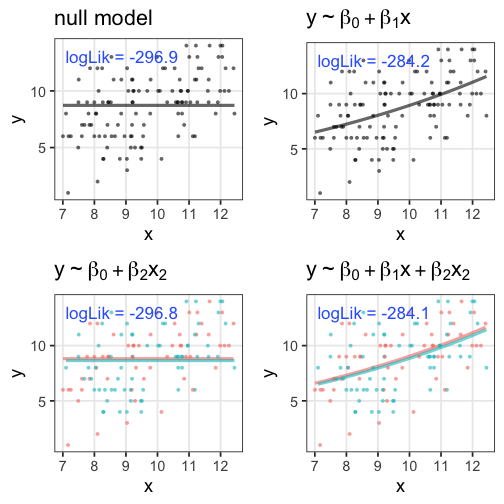
AIC: 赤池情報量基準
\[\begin{split} \text{AIC} = -2 (\log L^* - k) = -2 \log L^* + 2k \end{split}\]
- AICが小さいほど予測精度の良いモデル。
- 尤度は上げたい。
- パラメータ数 $k$ が増えるとペナルティ。
- どのデータに対する当てはまりを目指すかという観点
- 「手元のデータ」に対する対数尤度は $\log L^*$
- 「真のメカニズムから出てくる未来のデータ」に対する
平均対数尤度の推定量は $(\log L^* - k)$
(Kullback–Leibler情報量を使って導出するらしい)
- 「手元のデータ」に対する対数尤度は $\log L^*$
無駄な説明変数の追加でAIC増加
ある植物が作る種の数 $y$ は個体のサイズ $x$ に応じて増える。
観察時に着てた服の色 $x_2$ を追加したモデルはAICが増加。
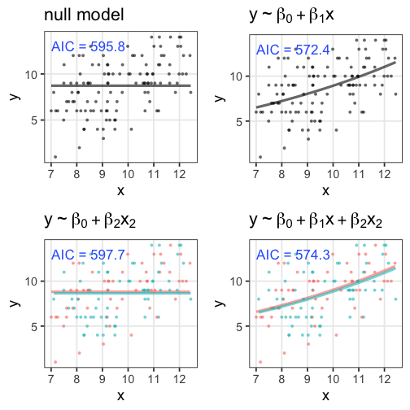
ほかの情報量基準
モデル選択の心構え
「正しい」ものを選べるわけではない。
予測・理解に useful なものを何らかの基準で選ぶだけ。
All models are wrong, but some are useful. — George E. P. Box

現実的な注意点・悩みどころ
- 多重共線性(multicollinearity):
- 説明変数同士が強い相関関係にある
- 変数変換:
- 気安くやるべきじゃないけど、対数変換などしばしば有用
- 割り算した値は危険
- 交互作用を入れると解釈が難しくなる。
交互作用
ある説明変数の効果が、別の説明変数によって異なる。
e.g., ビール売上の温度依存性が天気によって異なる。
| 天気 | $x_1$ |
|---|---|
| ☀️ 晴れ | 1 |
| ☔️ 雨 | 0 |
\[\begin{split} y_i &= \mathcal{N}(\mu_i,\sigma^2) \\ \mu_i &= \beta_0 + \beta_1 x_{1i} + \beta_2 x_{2i} + \beta_{1,2} x_{1i} x_{2i} \end{split}\]
雨の日は $x_{1i} = 0$ のため $\beta_0,~\beta_2$ の項だけ。
晴れの日はそれに加えて $\beta_1,~\beta_{1,2}$ の項も。

解釈が一気に難しくなるのでむやみに使わない。
一般化線形モデル座学まとめ
- 何はともあれ散布図を描く
- 適切な確率分布・リンク関数・説明変数を考える
- パラメータを最尤推定する
- 尤度は「手元のデータへのあてはまり」
- モデルを比較するときは情報量基準を参考にする
n個のうちy個生存。二項分布に従……わない！
植物100個体から8個ずつ種子を取って植えたら全体で半分ちょい発芽。
親1個体あたりの生存数はn=8の二項分布になるはずだけど、
極端な値(全部死亡、全部生存)が多かった。個体差？

個体差をモデルに組み込みたい
各個体の生存率$p_i$をそのままパラメータにすると過剰適合。
「パラメータ数 ≥ サンプルサイズ」の“データ読み上げ”モデル。
i.e., この個体は4個生き残って生存率0.5だね。次の個体は2個体だから……
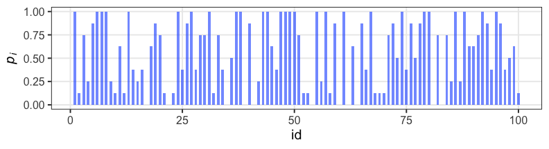
個体の生存能力をもっと少ないパラメータで表現できないか？
個体差をモデルに組み込みたい
各個体の生存率$p_i$が能力値$z_i$のシグモイド関数で決まると仮定。
その能力値は全個体共通の正規分布に従うと仮定:
$z_i \sim \mathcal{N}(\hat z, \sigma)$

パラメータ2つで済む: 平均 $\hat z$, ばらつき $\sigma$ 。
前者は標本平均 $\hat p$ から求まるとして、後者どうする？
個体能力のばらつき $\sigma$ が大きいと両端が増える
普通の二項分布は個体差無し $\sigma = 0$ を仮定してるのと同じ。
 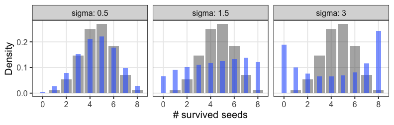
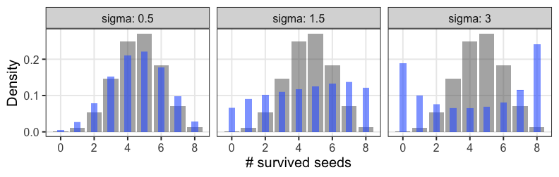
zの値で色分けしてみると想像しやすい
正規分布と二項分布の混ぜ合わせ……?
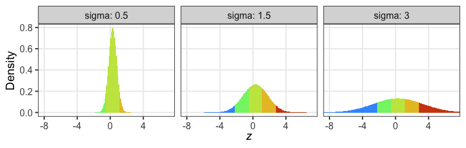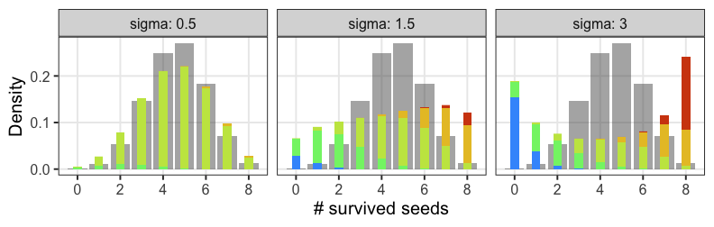
混合分布。ただの二項分布よりも良いあてはまり。
パラメータp(を決めるz)ごとに二項分布を作って、重み付けして足したもの。
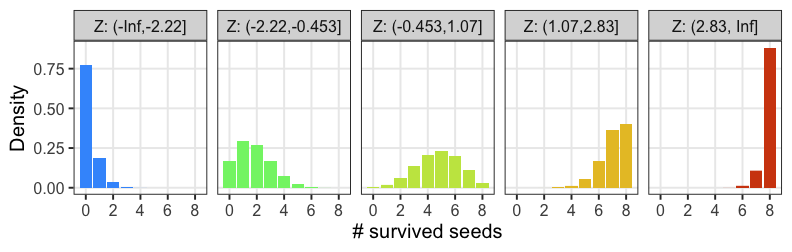

一般化線形混合モデル GLMM
固定効果(fixed effects) のみ扱っていたGLMを拡張して、
変量効果(random effect) を混合したモデル。
「混合分布を使うモデル」という意味ではないらしい。
\[\begin{split} y_i &\sim \text{Binomial}(n,~p_i) \\ \text{logit}(p_i) &= \beta_0 + \beta_1 x_{1i} + \beta_2 x_{2i} + \ldots + z_{1i} + \ldots \\ z_{1i} &\sim \mathcal{N}(\mu_1,~\sigma_1) \end{split}\]
e.g.,
個体$i$の種子生存率$p_i$は、
(固定効果) 体サイズ$x_{1i}$と日当たり$x_{2i}$に依存し、
(変量効果) よくわからん個体差$z_{1i}$と植木鉢差$z_{2i}$もある。
固定効果にするか、変量効果にするか
推定したパラメータを予測に使うなら固定効果
- 予測に使えそうなので固定効果向き
- 観測・操作した連続値変数: 長さ、重さ、温度、etc.
- 観測・操作したカテゴリカル変数: 性別、投薬、etc.
- 予測に使えないので変量効果向き
- 観測・操作できなかった個体差:
たまたま集まってくれた学生15人 {A, B, C, …}。
Aさんの固定効果を推定できても、Zさんの予測には使えない。
- 観測・操作できなかった個体差:
- 観測・操作できなかったグループ差:
↑の学生をランダム5人ずつに分けたグループ {い、ろ、は}。
いグループの固定効果を推定できても、また集まることはない。
- 観測・操作できなかったグループ差:
どういうときに変量効果を考える必要があるか
データに擬似反復が含まれるとき。
ぜんぶ独立のつもりで解析すると推定が偏ったり誤ったり。
| 植木鉢 | 個体/植木鉢 | 種子/個体 | 疑似反復 | 推定不可 |
|---|---|---|---|---|
| 100個 | 1個体ずつ | 1個ずつ | – | 個体差・鉢差 |
| 25個 | 1個体ずつ | 4個ずつ | 個体 | 鉢差 |
| 20個 | 5個体ずつ | 1個ずつ | 植木鉢 | 個体差 |
| 5個 | 5個体ずつ | 4個ずつ | 植木鉢・個体 | – |
疑似反復あり
→ 観測できなかった個体差・場所差(変量効果)を推定可能
→ そのぶんを差し引いて固定効果を推定したい
GLMMの問題点・展望
- 最尤推定の計算が難しくなるので、あまり複雑にはできない
- ベイズ推定を使えばクリアできる
- GLMの拡張として理解はできても、実際に書くのは難しめ
- 階層ベイズモデルの一種として見るほうが便利
→ ここでGLMMの練習はせず、階層ベイズモデルに進む。

一般化線形(混合)モデルまとめ
- 何はともあれ作図して俯瞰
- GLMは統計モデリングの考え方の根幹
- 確率分布・リンク関数・説明変数
- 尤度・最尤法によるパラメータ推定
- 情報量基準などによるモデル選択
- GLMMは現実のデータ解析に向けた強化
- 疑似反復による変量効果を考慮
- 階層ベイズモデルとして扱うほうが楽
🔰 課題
参考文献
- データ解析のための統計モデリング入門 久保拓弥 2012
- StanとRでベイズ統計モデリング 松浦健太郎 2016
- RとStanではじめる ベイズ統計モデリングによるデータ分析入門 馬場真哉 2019
- データ分析のための数理モデル入門 江崎貴裕 2020
- 分析者のためのデータ解釈学入門 江崎貴裕 2020
- 統計学を哲学する 大塚淳 2020
- 科学とモデル—シミュレーションの哲学 入門 Michael Weisberg 2017
(原著: Simulation and Similarity 2013)